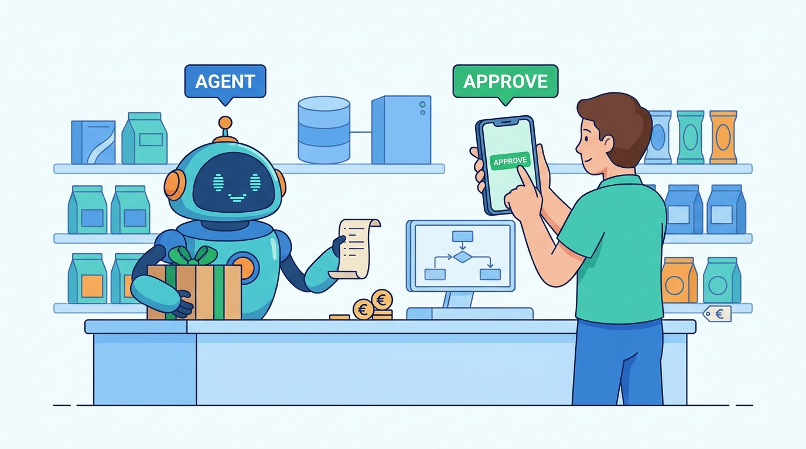

Part X — EVOLUTION: Decisions That Change With Scale
Assistants and Agents: AI in Commerce and What Is Real in 2026
AI-assisted: researched and written with Claude Code, images generated with the Gemini API. How this works

Part X — EVOLUTION: Decisions That Change With Scale
AI-assisted: researched and written with Claude Code, images generated with the Gemini API. How this works
